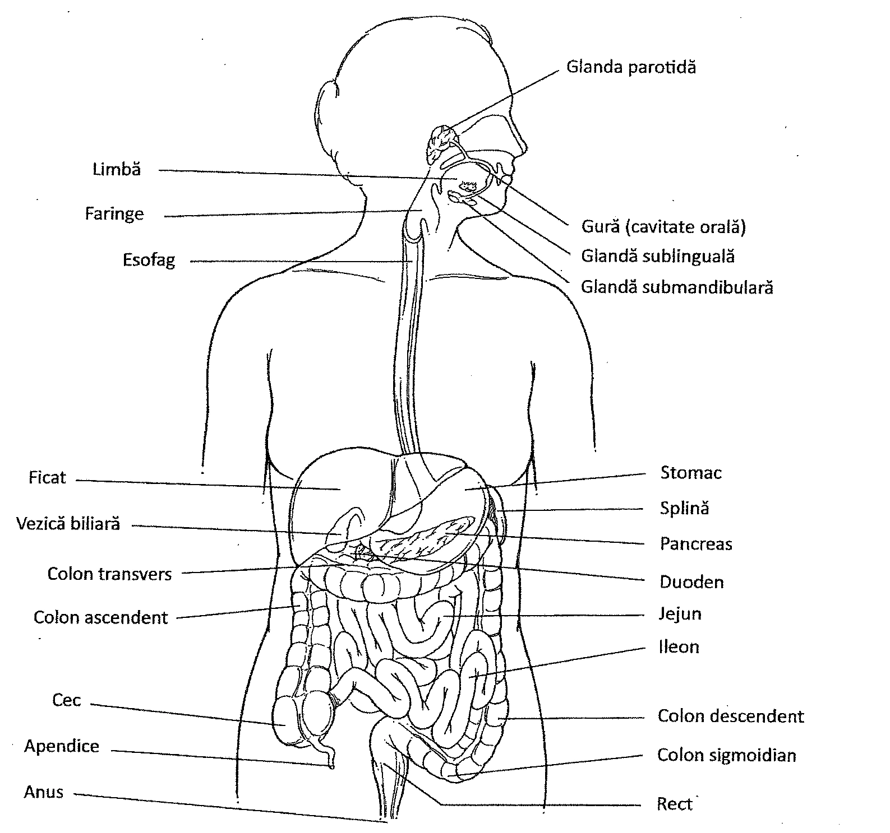
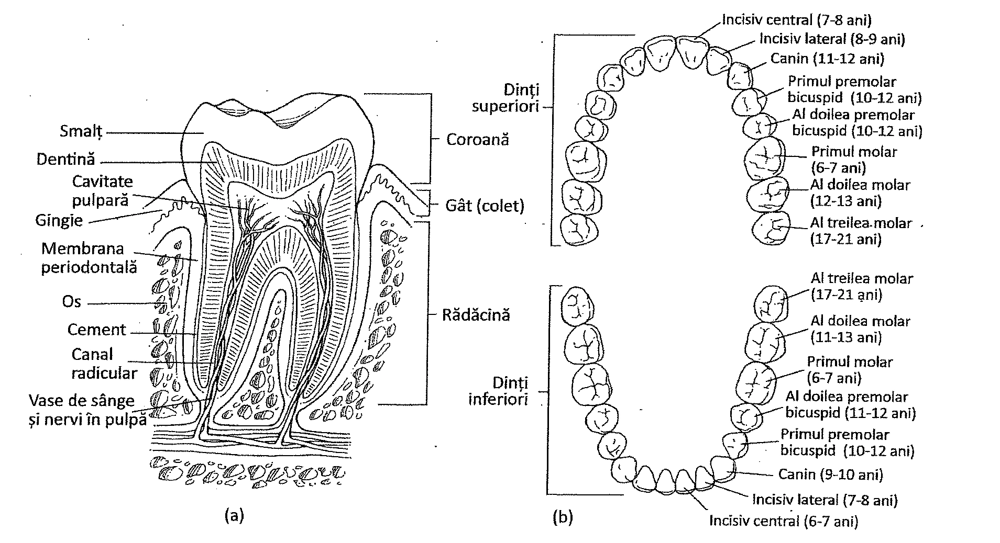
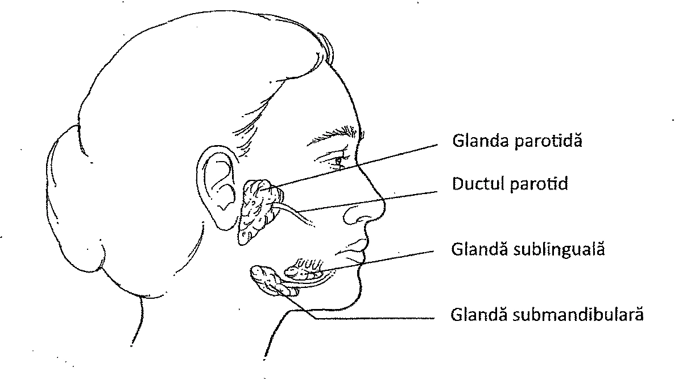
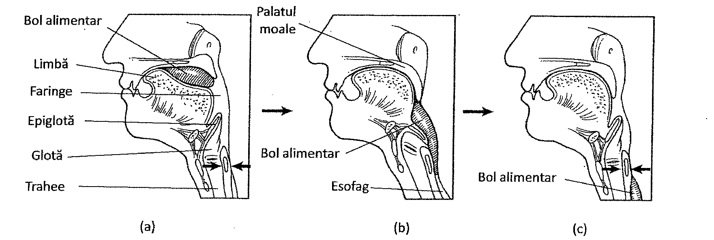
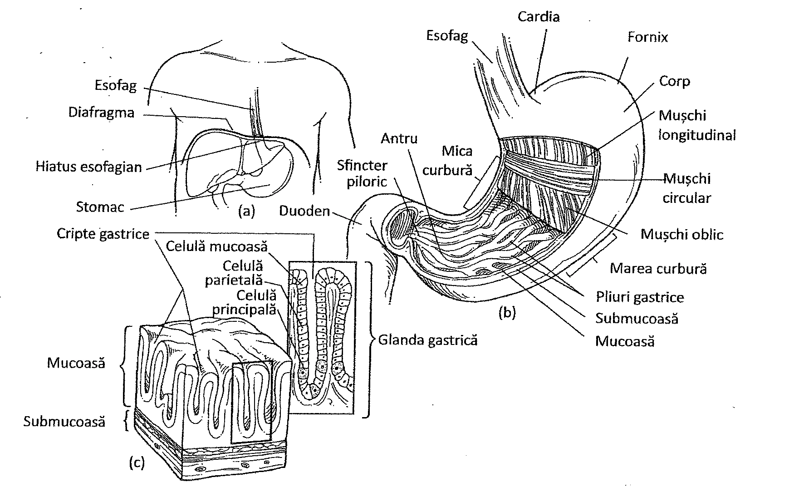
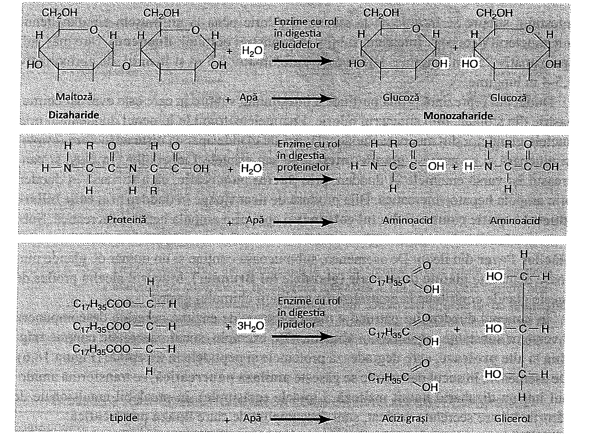
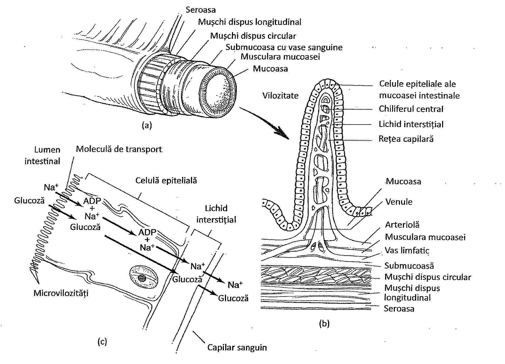
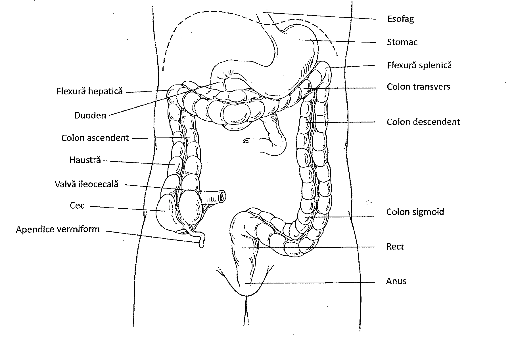
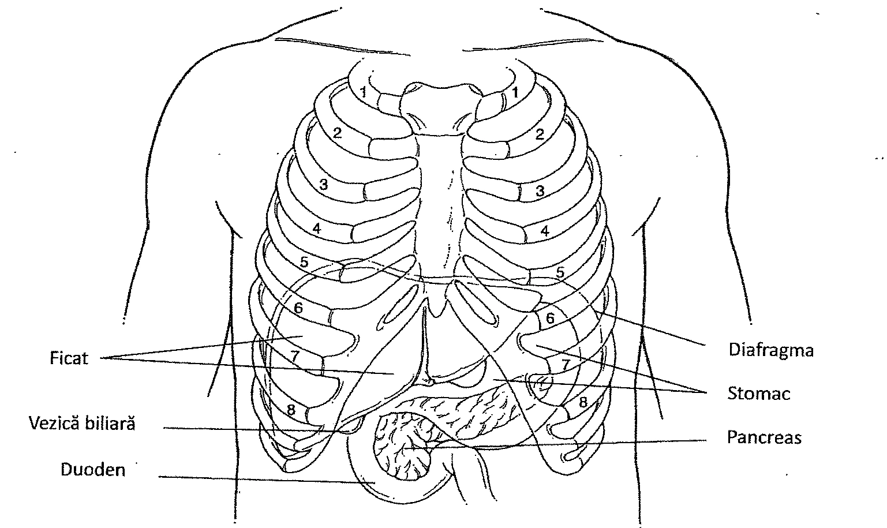
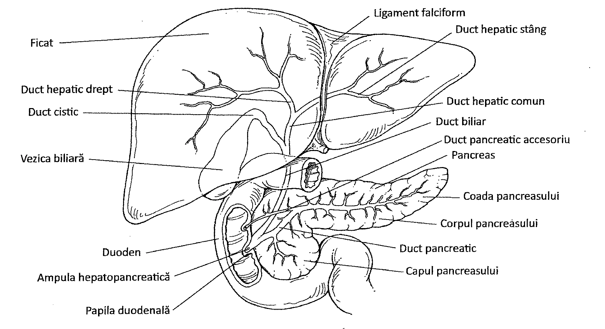

18. Sistemul digestiv
Cuprinsul capitolului
- Tractul gastrointestinal: cavitatea orală, esofagul, stomacul, intestinul subțire și intestinul gros
- Organele anexe: ficatul și pancreasul
18. Tractul gastrointestinal
Sistemul digestiv are două funcții importante: descompunerea moleculelor mari de alimente în molecule mici și absorbția moleculelor mici, a mineralelor și a apei în organism. Sistemul digestiv este format din tractul gastrointestinal și o serie de organe anexe. Organele tractului gastrointestinal sunt: cavitatea orală, esofagul, stomacul, intestinul subțire și cel gros. Organele anexe cuprind glandele salivare, ficatul și pancreasul (Figura 18.1).
Tractul gastrointestinal este o structură tubulară, musculară, de aproximativ 9 m lungime. Pereții acestuia sunt alcătuiți din patru straturi distincte. Tunica internă este denumită membrana mucoasă sau mucoasa. Aceasta este compusă dintr-un epiteliu ce acoperă un țesut conjunctiv, care conține mici cantități de mușchi neted. Mucoasa conține glande ale sistemului gastrointestinal. Aceste glande secretă enzime necesare digestiei moleculelor alimentare și mucus pentru a proteja țesuturile tractului gastrointestinal.

Tunica următoare a tractului gastrointestinal este submucoasa. Aceasta conține vase de sânge, vase limfatice și nervi. Tunica următoare este alcătuită din două straturi de mușchi neted. Stratul intern, format din mușchi netezi dispuși circular, înconjoară tractul gastrointestinal și prin contracție, micșorează diametrul acestuia. Stratul extern, de mușchi netezi dispuși longitudinal, este dispus de-a lungul tractului gastrointestinal. Contracția acestor mușchi scurtează lungimea tubului digestiv. Stomacul are un al treilea strat de mușchi netezi, cu dispoziție oblică, care se află între submucoasă și stratul circular. Tunica externă a tractului gastrointestinal este numită stratul seros sau seroasa. Acest strat este format din peritoneul visceral. Peritoneul visceral se continuă cu peritoneul parietal, care căptușește cavitatea abdominală. Celulele peritoneului visceral (seroasa) secretă un lichid care umectează suprafața externă a organelor și permite alunecarea liberă a acestora. Spațiul dintre peritoneul visceral și cel parietal se numește cavitate peritoneală.
TRACTUL GASTROINTESTINAL
Tractul gastrointestinal este componenta principală a sistemului digestiv. Acesta se extinde de la cavitatea orală la anus.
CAVITATEA ORALĂ
Cavitatea orală este segmentul tractului gastrointestinal care asigură ingestia și digestia mecanică a alimentelor, reducându-le masa și amestecându-le cu salivă (Tabelul 18.1). Cavitatea orală este înconjurată de buze, obraji, precum și de palatul moale și palatul dur. Funcțiile sale sunt ingestia alimentelor, digestia mecanică și lubrifierea acestora.
Limba este conectată de planșeul oral printr-un pliu de țesut numit frâul limbii. Limba este compusă dintr-un mușchi striat acoperit de o membrană mucoasă. Pe părțile laterale ale limbii, cuprinși în papilele gustative, se găsesc mugurii gustativi (Capitolul 12). Funcția limbii este de a transforma alimentele în boluri alimentare, cu ajutorul salivei. Digestia mecanică a alimentelor este produsă în mare parte de către dinți (Figura 18.2). Dinții sunt de două tipuri. Dinții deciduali/temporari, în număr de 20, sunt cunoscuți și sub denumirea de „dinții de lapte". Aceștia se pierd de obicei până la vârsta de șase ani și sunt înlocuiți de dinții permanenți, în număr de 32.
Există patru tipuri de dinți: incisivii, folosiți pentru tăierea alimentelor de dimensiuni mari, caninii, care au formă conică (de colți) și se folosesc la apucarea și sfâșierea alimentelor, premolarii care sunt plați și servesc la mărunțire/măcinare, molarii, care de asemenea sunt dinți plați folosiți pentru mărunțire.
Structura de bază a dintelui include coroana, acoperită de smalț, rădăcina, acoperită de cement, și gâtul (coletul) dintelui, care leagă coroana de rădăcina dintelui. Cele două componente principale ale dintelui sunt smalțul și dentina. Smalțul este cea mai dură substanță din organism și se găsește la suprafața exterioară a dintelui. Este alcătuit în principal din săruri de calciu, săruri care constituie componenta majoră a unei substanțe minerale numită hidroxiapatita. A doua componentă, dentina, este mai moale decât smalțul și formează cea mai mare parte a dintelui. Aceasta este situată sub smalț și înconjoară pulpa dentară. Pulpa dentară conține vasele de sânge, nervii și țesuturile conjunctive ale dintelui.
| Organ | Funcții principale |
|---|---|
| Cavitatea orală | Amestecă alimentele cu secrețiile salivare; are funcție gustativă și de masticație |
| Glandele salivare | Lubrifiază alimentele; produc enzime care inițiază procesul de digestie |
| Faringele | Segment comun cu sistemul respirator, conduce spre esofag |
| Esofagul | Transportă alimentele în stomac |
| Stomacul | Secretă acid clorhidric și enzime digestive cu rol în descompunerea proteinelor |
| Intestinul subțire | Secretă enzime și alți factori necesari digestiei; rol în absorbția nutrienților |
| Ficatul | Secretă bila (necesară digestiei lipidelor); sintetizează proteinele din sânge; depozitează lipide și glucide |
| Vezica biliară | Depozitează bila și o eliberează în intestinul subțire |
| Pancreasul | Secretă enzime digestive și lichide alcaline (sisteme tampon), și le eliberează în intestinul subțire; secretă hormoni |
| Intestinul gros | Absoarbe apa din alimentele nedigerate; depozitează reziduuri |
| Anusul | Se deschide la exterior, elimină materiile fecale |

Există trei categorii de glande salivare mari care secretă salivă în cavitatea orală. Aceste glande sunt considerate organe anexe ale sistemului digestiv. Prima glandă salivară este glanda parotidă (Figura 18.3). Această glandă pereche este situată în vecinătatea urechilor, în țesuturile profunde din regiunea feței. Reprezintă cea mai mare glandă salivară și este drenată de către ductul parotidian pe partea internă a obrazului.

A doua glandă salivară este glanda submandibulară sau submaxilară, situată în planșeul oral, în apropierea suprafeței interne a mandibulei. Este de asemenea o glandă pereche și este drenată de către ductul submandibular în cavitatea orală, deasupra planșeului oral. A treia glandă salivară este glanda sublinguală. Similar cu celelalte două glande salivare, este o glandă pereche și este situată tot în planșeul oral, sub limbă, în fața glandelor submandibulare. Secrețiile produse de glandele sublinguale sunt transportate în cavitatea orală, la nivelul planșeului oral printr-o serie de ducte, numite ducte sublinguale (Tabel 18.2).
| Denumirea glandei | Localizare | Deschiderea ductului |
|---|---|---|
| Parotidă | Dedesubtul urechii | Pe partea internă a obrajilor, opus celui de-al doilea molar superior; ductul parotidian |
| Submandibulară (Submaxilară) | În planșeul oral, în apropierea suprafeței interne a mandibulei | Pe planșeul oral, lateral de frâul limbii; ductul submandibular |
| Sublinguală | Sub limbă, în fața glandelor submandibulare | Mai multe ducte sublinguale se deschid la nivelul planșeului oral, sub limbă |
Secreția glandelor salivare, saliva, facilitează lubrifierea și legarea particulelor alimentare, și începe descompunerea moleculelor de glucide. Celulele seroase ale glandelor salivare produc o enzimă cunoscută sub numele de amilază. Amilaza digeră chimic moleculele de amidon și glicogen în două unități monozaharidice denumite dizaharide. Dizaharidul produs prin descompunerea amidonului și glicogenului se numește maltoză. Deoarece alimentele rămân în cavitatea orală pentru o perioadă scurtă de timp, numai o cantitate mică de amidon este digerat aici; cea mai mare parte este digerată în intestinul subțire. Celulele mucoase ale glandelor salivare produc mucus. Mucusul este un lichid gros, vâscos, care leagă particulele alimentare și lubrifiază tractul gastrointestinal.
Palatul este structura care formează bolta cavității orale. Acesta este alcătuit dintr-o parte anterioară, dură (palatul dur) și o parte posterioară, moale (palatul moale). O prelungire în formă de con, numită uvulă, se extinde în jos de la palatul moale.
Amigdalele sunt aglomerări de țesut limfatic localizate în mucoasă. Acestea sunt: amigdalele palatine, amigdalele faringiene și amigdala linguală. Amigdalele fac parte din sistemul limfatic și sunt alcătuite din structuri limfatice (Capitolul 16). Ele au rol în apărarea organismului.
ESOFAGUL
Esofagul este o structură tubulară dreaptă, distensibilă, musculară care leagă faringele de stomac. Măsoară aproximativ 25 cm lungime și traversează diafragma către stomac. Esofagul este primul segment în care pot fi observate cele patru straturi ale peretelui tractului gastrointestinal. În treimea superioară a esofagului, tunica musculară este alcătuită din fibre musculare striate. În treimea inferioară, tunica musculară devine alcătuită exclusiv din fibre musculare netede.
Pentru ca alimentele să treacă din cavitatea orală în stomac, acestea trebuie înghițite. Procesul de înghițire este denumit deglutiție (Figura 18.4). Acesta este un proces care necesită activitățile coordonate ale limbii, palatului moale, faringelui și esofagului. Prima etapă se produce în cavitatea orală și este sub control voluntar. Alimentele sunt mestecate și îmbibate cu salivă, pentru a forma bolul alimentar, care este împins către faringe cu ajutorul limbii, moment în care începe etapa involuntară a deglutiției.

În etapa involuntară a deglutiției, mușchii faringieni se contractă și împing bolul alimentar în esofag. Nervii sistemului nervos autonom controlează această etapă prin contracții musculare, declanșând un proces denumit peristaltism. Peristaltismul constă în formarea unor unde de contracție ale stratului muscular neted al esofagului. În prima fază se contractă mușchii longitudinali, apoi cei circulari. Aceste contracții musculare împing bolul alimentar până ce acesta ajunge la un mușchi circular, situat la extremitatea superioară a stomacului, numit sfincterului esofagian inferior sau sfincterul cardial.
18. Stomacul
STOMACUL
Stomacul se întinde de la nivelul sfincterului esofagian inferior până la mușchiului circular situat la capătul său distal, denumit și sfincter piloric (Figura 18.5). Stomacul este un organ de forma literei J, situat în porțiunea superioară stângă a abdomenului. Părțile sale principale sunt cardia (situată în apropierea cordului), fundul (fornixul), corpul stomacului (sau partea principală) și antrul piloric (o porțiune distală, îngustă). Pe suprafața internă stomacul prezintă pliuri numite rugae, care sunt evidente atunci când stomacul este gol și micșorat. Când stomacul este destins, pliurile dispar.
Suprafața laterală convexă a stomacului este denumită marea curbură. Suprafața medială, concavă, se numește mica curbură. Un strat dublu de peritoneu, micul epiplon, se extinde de la ficat la mica curbură. O altă prelungire a peritoneului este marele epiplon, care se extinde mai jos de stomac, deasupra organelor abdominale. Stomacul este un organ cu rol de stocare a alimentelor și locul în care se produce descompunerea chimică a anumitor molecule. Stomacul prezintă trei straturi musculare netede: alături de stratul circular și longitudinal, există un al treilea strat, oblic. Straturile musculare mixează și desfac bolul alimentar transformându-l într-un amestec cu consistența unei supe, numit chim. Mucoasa stomacului se invaginează și formează cripte profunde, în care se varsă secrețiile glandelor gastrice. Glandele gastrice secretă sucul gastric, care conține o multitudine de substanțe.
Celulele parietale secretă o componentă a sucului gastric, și anume acidul clorhidric, care este necesar pentru activarea enzimelor proteolitice. Celulele parietale produc, de asemenea, factor intrinsec, necesar pentru absorbția vitaminei B₁₂ în intestinul subțire. O altă componentă a sucului gastric este mucusul, un produs al celulelor mucoase. Mucusul protejează peretele stomacului de autodigestie. De asemenea, în sucul gastric se găsesc enzime proteolitice, secretate de celulele principale ale glandelor gastrice.
Cea mai importantă enzimă proteolitică din stomac este pepsina (Tabelul 18.3). Pepsina nu este secretată de celulele principale în forma sa activă. Este secretat mai întâi precursorul acesteia, pepsinogenul, care, în prezența acidului clorhidric este convertit în pepsină. Pepsina descompune proteinele mari în proteine mai mici denumite peptide. O altă enzimă proteolitică digestivă este labfermentul, produs în stomacul sugarilor, dar nu și în cel al adulților; el facilitează digestia laptelui.

| Componenta | Sursa | Funcția |
|---|---|---|
| Pepsinogen | Celulele principale ale glandelor gastrice | Se transformă în pepsină |
| Pepsină | Formată din pepsinogen în prezența acidului clorhidric | Enzimă proteolitică digestivă, capabilă să descompună aproape toate tipurile de proteine în peptide |
| Acid clorhidric | Celulele parietale ale glandelor gastrice | Conferă mediul acid necesar pentru transformarea pepsinogenului în pepsină |
| Mucus | Glandele mucoase | Strat vâscos, alcalin, ce protejează peretele stomacului |
| Factor intrinsec | Celulele parietale ale glandelor gastrice | Necesar pentru absorbția vitaminei B₁₂ |
Secreția de suc gastric este controlată de către fibrele nervoase ale sistemul nervos parasimpatic. De asemenea, celulele din mucoasa stomacului secretă un hormon numit gastrină. Gastrina controlează secreția de pepsinogen, precum și cea de acid clorhidric și mucus. Celulele care produc gastrina sunt denumite celule enteroendocrine.
Mucoasa stomacului are și o redusă funcție de absorbție. Substanțele care se pot absorbi sunt: cantități mici de apă, glucoză, ioni și alcool. Restul alimentelor sunt pregătite pentru procesele digestive ulterioare, prin transformarea lor în chim gastric. Contracțiile peristaltice evacuează chimul prin sfincterul piloric în intestinul subțire, unde are loc cea mai mare parte a digestiei.
18. Intestinul subțire și intestinul gros
DUODENUL
Intestinul subțire se întinde de la sfincterul piloric până la un mușchi circular denumit sfincterul ileocecal. Intestinul subțire prezintă trei porțiuni: duodenul, care măsoară aproximativ 25 cm lungime; jejunul, de aproximativ 2,5 m și ileonul, de aproximativ 3,5-4 m lungime.
Duodenul reprezintă prima porțiune a intestinului subțire în care este evacuat chimul gastric din stomac, prin sfincterul piloric. Enzimele pătrund în lumenul duodenului prin ductele glandelor din mucoasa duodenală; aceste glande apar ca niște adâncituri (cripte) în mucoasă și se numesc glande intestinale sau criptele Lieberkühn. În plus, și pancreasul își varsă enzimele în duoden, prin ductul pancreatic, care se varsă în duoden prin ampula hepatopancreatică. Bila produsă de ficat ajunge în duoden prin căile biliare (ductul hepatic comun și ductul coledoc) și apoi prin ampula hepatopancreatică. Submucoasa duodenului conține aglomerări de țesut limfoid cu dispoziție nodulară, similar plăcilor Peyer din ileon. De asemenea, submucoasa conține și un număr de glande mucoase denumite glande duodenale (glandele lui Brunner). Mucusul alcalin produs de aceste glande contribuie la neutralizarea acidității chimului gastric.
În lumenul duodenului pătrund o mare varietate de enzime necesare descompunerii diverselor substanțe organice din alimente. De exemplu, sucul pancreatic conține tripsina și alte proteaze, care degradează proteinele și peptidele în dipeptide (Figura 18.6). De asemenea, în sucul pancreatic se găsește amilaza pancreatică, ce transformă amidonul într-un dizaharid numit maltoză. Lipidele (grăsimile), în prealabil emulsionate de sărurile biliare secretate de ficat, sunt descompuse de către lipaza pancreatică.
Celulele intestinului subțire produc și ele enzime digestive. Peptidazele, dipeptidazele și aminopeptidazele realizează digestia proteinelor, rezultând aminoacizi liberi. Celulele intestinului subțire produc, de asemenea dizaharidaze: lactaza, zaharaza și maltaza, care descompun lactoza, zaharoza și maltoza în monozaharidele lor componente. Ele secretă și nucleaze pentru descompunerea ARN-ului și ADN-ului din alimente.
Sucul pancreatic conține ioni de bicarbonat, care cresc pH-ul sucului intestinal și neutralizează aciditatea chimului gastric. Acest lucru este important, deoarece enzimele digestive, cu excepția pepsinei, funcționează numai într-un mediu cu pH neutru.
O altă componentă importantă a procesului de digestie este bila, care este produsă de ficat și este stocată în vezica biliară. Bila este transportată prin căile biliare în ampula hepatopancreatică, în care se deschide și ductul pancreatic, de unde ajunge în duoden. Bila nu conține enzime. Ea conține bicarbonat pentru neutralizarea acidității gastrice. Conține, de asemenea, și săruri biliare, care descompun globulele mari de lipide în globule mici, care pot fi apoi ușor digerate de lipaze (Tabel 18.4). Acest proces este denumit emulsionare. Bila crește absorbția lipidelor, precum și absorbția vitaminelor liposolubile, ca de exemplu A, D și K.
În procesul digestiei, bila emulsionează lipidele în picături mici cunoscute sub numele de micelii. Miceliile sunt formele sub care sunt transportați acizii grași și monogliceridele. În timpul absorbției, miceliile vin în contact cu membranele celulelor care tapetează vilozitățile intestinale și își eliberează conținutul în celule. Produșii rezultați din digestia lipidelor trec mai apoi în chiliferul central (vas limfatic din centrul vilozității intestinale) sub formă de trigliceride, conținute în picături microscopice de lipide denumite chilomicroni.

Eliberarea sucului pancreatic este controlată nervos, prin ramurile unui nerv cranian, precum și hormonal, prin hormonii produși de celulele intestinului subțire. Doi dintre acești hormoni sunt secretina și colecistochinina. Acțiunea ambilor hormoni este esențială în procesul de digestie, ei controlând eliberarea produșilor din pancreas, ficat și vezica biliară. De exemplu, eliberarea bilei în duoden este controlată de colecistochinină.
JEJUNUL ȘI ILEONUL
Digestia continuă în jejun și ileon, aceste segmente ale intestinului subțire reprezentând, de asemenea, sediul principal al procesului de absorbție. Suprafața acestora este crescută de mii de vilozități și microvilozități. Vilozitățile sunt prelungiri ale mucoasei, având formă de deget, în timp ce microvilozitățile sunt prelungiri de dimensiuni electronomicroscopice ale membranei celulelor din mucoasă. În interiorul vilozității se găsesc o serie de capilare, precum și un vas limfatic central, denumit chiliferul central. Capilarele primesc produșii de degradare ai proteinelor, glucidelor și acizilor nucleici, rezultați în urma digestiei. Vasele limfatice primesc produșii rezultați în urma digestiei lipidelor (Figura 18.7).
| Sursă | Fluid | Enzimă | Substrat | Produs | Loc de acțiune |
|---|---|---|---|---|---|
| Glande salivare | Salivă | Amilaza salivară | Amidon | Maltoza | Cavitatea orală |
| Stomac | Suc gastric | Pepsina | Proteine | Peptide | Stomac |
| Stomac | Suc gastric | Labfermentul | Proteine din lapte | Proteină coagulantă | Stomac |
| Stomac | Suc gastric | Acid clorhidric (nu este o enzimă) | Mai multe alimente | Unități mai mici | Stomac |
| Pancreas | Suc pancreatic | Amilaza pancreatică | Amidon | Maltoza | Intestin subțire |
| Pancreas | Suc pancreatic | Lipaza | Lipide | Acizi grași, glicerol | Intestin subțire |
| Pancreas | Suc pancreatic | Tripsina | Proteine | Peptide | Intestin subțire |
| Pancreas | Suc pancreatic | Chimotripsina | Proteine | Peptide | Intestin subțire |
| Pancreas | Suc pancreatic | Carboxipeptidaza | Proteine | Peptide | Intestin subțire |
| Intestin subțire | Suc intestinal | Maltaza | Maltoza | Glucoza | Intestin subțire |
| Intestin subțire | Suc intestinal | Lactaza | Lactoza | Glucoza, galactoza | Intestin subțire |
| Intestin subțire | Suc intestinal | Zaharaza | Zaharoza | Glucoza, fructoza | Intestin subțire |
| Intestin subțire | Suc intestinal | Aminopeptidaza | Peptide | Aminoacizi | Intestin subțire |
| Intestin subțire | Suc intestinal | Dipeptidaza | Dipeptide | Aminoacizi | Intestin subțire |
| Intestin subțire | Suc intestinal | Nucleaza | ADN și ARN | Nucleotide | Intestin subțire |
| Ficat | Bilă | Săruri biliare (nu sunt enzime) | Picături mari de grăsime | Grăsimi emulsionate | Intestin subțire |
Pasajul elementelor nutritive prin membrana celulelor epiteliale în lichidul interstițial și apoi în capilare este realizat în mare măsură prin mecanisme de transport activ, cu ajutorul moleculelor transportoare și al ATP-ului. De asemenea, absorbția se poate produce și prin difuziune, difuziune facilitată și pinocitoză. Pentru lipide, difuziunea reprezintă principalul mecanism de absorbție.
Monozaharidele, aminoacizii și acizii grași cu lanț scurt de carbon sunt absorbiți în capilarele sanguine ale vilozităților intestinale. Acizii grași cu lanț lung sunt resintetizați pentru a forma trigliceride, acestea difuzând apoi în chiliferul central, după cum s-a menționat anterior.
Apa, electroliții, precum ionii de sodiu, și vitaminele sunt absorbite tot în capilarele sanguine.

INTESTINUL GROS
Intestinul gros este format din cec, colon ascendent, colon transvers, colon descendent, colon sigmoid, rect, canal anal și anus. Intestinul gros poartă această denumire, deoarece diametrul său este considerabil mai mare decât diametrul intestinului subțire. Intestinul gros prezintă numeroase dilatații cu aspect de mici buzunare, numite haustrații, și măsoară aproximativ 1,5 m lungime, având un diametru mediu de 6 cm. Cea mai mare parte a intestinului gros este cunoscută și sub denumirea de colon.
Cecul este prima porțiune a intestinului gros, cu o lungime de aproximativ șase sau șapte centimetri, situat în zona în care intestinul subțire se continuă cu intestinul gros, în cadranul inferior drept al abdomenului. Apendicele vermiform este o scurtă extensie cu aspect vermicular ce ia naștere din cec. El este un organ vestigial care se poate inflama, necesitând în această situație îndepărtarea sa chirurgicală.
Alimentele nedigerate pătrund din ileon în colonul ascendent prin valva ileocecală. Colonul ascendent se află în poziție verticală, pe partea dreaptă a abdomenului, extinzându-se în sus, spre marginea inferioară a ficatului (Figura 18.8). Colonul transvers străbate în sens orizontal abdomenul, în apropierea stomacului și a splinei. Colonul transvers se continuă cu colonul descendent la nivelul flexurii splenice, de la nivelul căruia colonul este poziționat din nou vertical, dar descendent, pe partea stângă a abdomenului. Acesta se continuă cu colonul sigmoid, o structură în formă de S, care coboară și se continuă cu rectul. Ultimii 18-20 centimetri ai tractului gastrointestinal sunt reprezentați de rect. Rectul se continuă cu canalul anal și apoi cu orificiul extern al canalului anal, numit anus, aceste structuri reprezentând ultimele segmente ale intestinului gros.

Funcțiile intestinului gros includ absorbția apei și a ionilor, precum și formarea materiilor fecale. La acest nivel, se absorb aproximativ 300-400 ml de apă, zilnic. Când absorbția este deficitară, se pierd cantități mari de apă prin materiile fecale, ducând la diaree. Principalul ion absorbit în intestinul gros este ionul de sodiu. La nivelul intestinului gros nu au loc procese de digestie chimică...
O altă funcție importantă a intestinului gros este absorbția vitaminelor. Desfășurarea proceselor metabolice necesită cantități mici de vitamine (Capitolul 19). Unele vitamine sunt produse de bacteriile care se găsesc în mod normal în intestin. De asemenea, intestinul gros înmagazinează și compactează materialele nedigerate, formând materiile fecale. Eliminarea materiilor fecale se numește defecație. Tehnic vorbind, defecația nu este o funcție de excreție, ci, mai degrabă eliberarea materialelor care nu sunt digerate de organism sub formă de fecale. Materiile fecale sunt alcătuite din apă, săruri anorganice, bacterii, celule epiteliale desprinse din tractul gastrointestinal și alimente nedigerate. Defecația este un act reflex, facilitat de contracțiile voluntare ale unor variate grupe musculare.
18. Organele anexe
ORGANELE ANEXE
Organele anexe sunt implicate în procesele de digestie. Două dintre acestea sunt ficatul și pancreasul.
FICATUL
Ficatul este cea mai mare glandă din organism și unul dintre cele mai importante organe anexe ale tractului gastrointestinal. Ficatul se află sub diafragmă și este divizat în patru lobi cunoscuți sub denumirea de lobul drept, lobul stâng, lobul caudat și lobul pătrat (Figura 18.9). Lobii ficatului sunt subîmpărțiți în lobuli, care conțin celule hepatice (hepatocite) și macrofage (celule Kupffer).

Ficatul primește elementele nutritive absorbite la nivelul tractului digestiv prin sistemul port hepatic, o subdiviziune a sistemului circulator. Acest sistem este format din venulele și venele care drenează sângele din diferite regiuni ale sistemului digestiv și fuzionează pentru a forma o singură venă, vena portă. Vena portă transportă sângele din rețelele capilare ale sistemului digestiv la ficat, unde se ramifică pentru a forma o a doua rețea capilară. De asemenea, sistemul circulator furnizează ficatului oxigen și substanțe nutritive, prin artera hepatică. Sângele venos părăsește ficatul și reintră în circulație prin vena hepatică, care se varsă în vena cavă inferioară. Ficatul este situat sub diafragmă și ocupă cea mai mare parte a hipocondrului drept al cavității abdominale. Secreția acestuia, denumită bilă, se varsă în ductele hepatice, care apoi o conduc în vezica biliară.
Ficatul are multe funcții importante legate de digestie. Una dintre cele mai importante funcții este producerea bilei, un lichid galben-maroniu sau verde-oliv, cu un pH cuprins între 7,6 și 8,6. În compoziția bilei intră apă și săruri biliare, colesterol, un fosfolipid numit lecitină, pigmenți biliari și o serie de ioni. Principalul pigment biliar este bilirubina, o substanță derivată din fracțiunea hem a hemoglobinei din globulele roșii distruse (Capitolul 14).
Bilirubina este apoi digerată de către bacteriile intestinale, iar unul din compușii acesteia este urobilinogenul, ce contribuie la colorarea materiilor fecale. O parte din urobilinogen se resoarbe și este eliminat prin urină (Capitolul 20).
Bila produsă de ficat este depozitată în vezica biliară, o structură în formă de pară. Vezica biliară este localizată pe suprafața viscerală a ficatului, fiind drenată și umplută prin ductul cistic (Figura 18.10). Ductul cistic transportă bila în duoden prin ductul biliar. Acesta este format prin unirea ductului cistic al vezicii biliare cu ductul hepatic comun. Vezica biliară stochează și concentrează bila până în momentul în care aceasta este necesară în procesul de digestie.

O altă funcție a ficatului este aceea de a controla metabolismul glucidic. Când nivelul de glucoză în sânge este ridicat, enzimele hepatice transformă glucoza în glicogen. Acest proces este numit glicogenogeneză. În cazul scăderii nivelului de glucoză din sânge, enzimele din celulele hepatice transformă glicogenul în glucoză. Acest proces este numit glicogenoliză. Enzimele hepatice sunt, de asemenea, capabile să convertească anumiți aminoacizi în molecule de glucide, ca sursă energetică, atunci când nivelul de glucide din sânge este scăzut; acest proces este cunoscut sub numele de gluconeogeneză (Capitolul 19).
În ceea ce privește metabolismul lipidelor, ficatul este capabil să descompună acizii grași în molecule mai mici, cum ar fi acetil coenzima A. Moleculele de acetil coenzima A pot fi prelucrate ulterior în procesul de metabolism (Capitolul 19), pentru a elibera energia din legăturile chimice ale moleculelor.
În metabolismul proteinelor, enzimele hepatice sunt implicate într-un proces numit dezaminare. Dezaminarea implică îndepărtarea grupărilor amino din aminoacizi. Moleculele rezultate pot fi utilizate ulterior în metabolismul energetic, sau transformate în glucide sau lipide. Grupările amino care rezultă din aminoacizi sunt folosite pentru a sintetiza o substanță reziduală numită uree. Ureea este, în cele din urmă, eliminată din sânge la nivelul rinichiului și reprezintă principala substanță dizolvată în urină (Capitolul 20).
În ficat mai au loc și alte etape ale metabolismului proteic. De exemplu, celulele ficatului sintetizează cele mai multe proteine plasmatice, cum ar fi albumina, globulina, precum și protrombina și fibrinogenul, utilizate în coagularea sângelui.
Celulele hepatice îndepărtează medicamente și hormoni din sânge. De exemplu, celulele hepatice pot elimina drogurile și toxinele din sânge, excretându-le în bilă. Enzimele hepatice pot, de asemenea, altera structura chimică a anumitor hormoni steroizi, cum ar fi estrogenii și aldosteronul.
Depozitarea vitaminelor reprezintă o altă funcție a ficatului. Ficatul stochează vitamine, cum ar fi A, B₁₂, D, E și K, precum și minerale, cum ar fi fierul și cuprul. În celulele hepatice, o proteină numită apoferitină se combină cu ionii de fier pentru a forma feritina, formă sub care fierul este depozitat în ficat. Celulele Kupffer ale ficatului sunt implicate în procesul de fagocitoză, distrugând globulele roșii și albe îmbătrânite. În final, ficatul participă la activarea vitaminei D, formă sub care ea poate fi utilizată în organism.
PANCREASUL
Un alt organ anex al sistemului digestiv este pancreasul. Pancreasul are un rol important în sistemul endocrin (Capitolul 13), precum și în sistemul digestiv. Este o glandă alungită, de aproximativ 13 cm lungime și 2,5 cm grosime.
Pancreasul este localizat posterior față de marea curbură a stomacului și comunică cu duodenul prin intermediul a două ducte. Ductul mai mare este numit duct pancreatic, sau ductul Wirsung, iar cel de-al doilea este numit ductul accesoriu sau ductul Santorini. Ductul pancreatic se unește cu ductul biliar de la ficat și vezica biliară și intră în duoden la nivelul unei zone comune, denumite ampula hepatopancreatică. Ductul accesoriu intră în duoden cu aproximativ 2,5 cm deasupra ampulei hepatopancreatice.
Celulele pancreasului cu rol în digestie se organizează sub formă de acini. Ele reprezintă aproximativ 99% din masa pancreasului, constituind porțiunea sa exocrină, care secretă sucul pancreatic. Sucul pancreatic este un lichid limpede, incolor, ce conține apă, săruri, ioni de bicarbonat și enzime. Ionii de bicarbonat dau sucului pancreatic un pH ușor alcalin, care neutralizează aciditatea chimului gastric.
O serie de enzime din sucul pancreatic au rol în digestie. De exemplu, amilaza pancreatică digeră glucidele, proteazele (tripsina și chemotripsina) și carboxipeptidaza digeră proteinele, lipaza digeră lipidele. Secrețiile pancreasului sunt controlate de către hormonii secretină și colecistochinină.